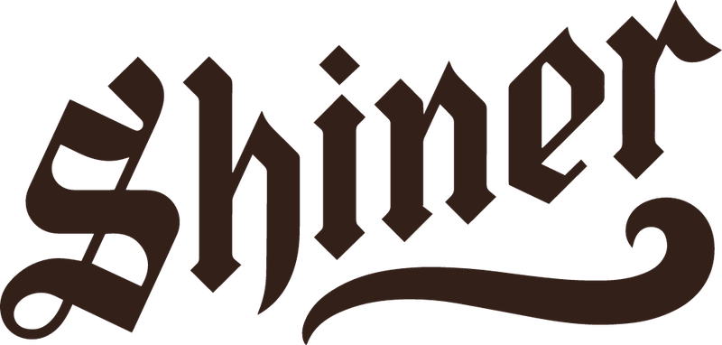
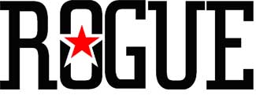

미국 맥주 브랜드 21
미국에서 시작된 맥주 브랜드 21개를 로고와 함께 정리했습니다. 대표적인 미국 맥주 브랜드로는 버드와이저(Budweiser), 몰슨 쿠어스(Molson Coors Brewing Company), 브루클린 브루어리(Brooklyn Brewery), 사뮤엘 아담스(Samuel Adams), 코나 브루잉 컴퍼니(Kona Brewing Company), 밀러(Miller Brewing Company) 등이 있습니다. 기원 국가는 검수된 브랜드 설명이나 위키데이터 개체에서 확인된 값만 씁니다.
다른 나라 맥주 브랜드
맥주 브랜드 전체 →설립연도가 확인된 브랜드는 20개이며 가장 오래된 곳은 1829년, 가장 최근은 2005년에 시작했습니다. 시기별로는 1900년 이전 6개, 1900~1949년 1개, 1950~1999년 12개, 2000년 이후 1개입니다. 수록 자료로는 로고 이미지 20개, 연혁 타임라인 1개를 갖췄습니다. 이 가운데 21개는 공식 웹사이트가 일치하는 위키데이터 개체로 연결해 두었습니다.
미국 맥주 브랜드 한눈에 보기
- 버드와이저(Budweiser) — 버드와이저(Budweiser)는 아돌푸스 부시가 1876년 출시한 미국의 아메리칸 라거 맥주 브랜드이다.
- 몰슨 쿠어스(Molson Coors Brewing Company) — 몰슨 쿠어스(Molson Coors Brewing Company)는 미국과 캐나다에 기반을 둔 다국적 음료·양조 회사로, 맥주 생산량 기준 세계 5위 양조사이다.
- 브루클린 브루어리(Brooklyn Brewery) — 브루클린 브루어리(Brooklyn Brewery)는 미국 뉴욕 브루클린에 기반을 둔 양조장이다.
- 사뮤엘 아담스(Samuel Adams) — 사뮤엘 아담스(Samuel Adams)는 미국 Boston Beer Company의 대표 맥주 브랜드이다.
- 코나 브루잉 컴퍼니(Kona Brewing Company) — 코나 브루잉 컴퍼니(Kona Brewing Company)는 미국 하와이의 Kailua-Kona에 본사를 둔 양조장 겸 펍이다.
- 밀러(Miller Brewing Company) — 밀러(Miller Brewing Company)는 미국 위스콘신주 밀워키에 본사를 둔 맥주 양조회사이다.
- 구스 아일랜드(Goose Island Brewery) — 구스 아일랜드(Goose Island Brewery)는 미국 시카고에 본사를 둔 양조회사이다.
- 쿠어스(Coors Brewing Company) — 쿠어스(Coors Brewing Company)는 미국 콜로라도주 골든에 본사를 둔 양조회사이자 맥주 회사이다.
- D.G. 잉링 & 손(Yuengling) — D.G. 잉링 & 손(Yuengling)은 1829년 미국 펜실베이니아주 포츠빌에서 창립한 맥주 회사이다.
- Anderson Valley Brewing Company — Anderson Valley Brewing Company는 1987년 미국 캘리포니아 Boonville에서 설립된 양조장이다.
- Stone Brewing Company — Stone Brewing Company는 1996년 미국 캘리포니아주 샌마커스에서 문을 연 크래프트 맥주 양조장이다.
- Lone Star Brewing Company — Lone Star Brewing Company는 1884년 미국 텍사스 샌안토니오에서 설립되어 Alamo Beer를 양조한 맥주 회사이다.
미국 맥주 브랜드 목록
버드와이저(Budweiser)는 아돌푸스 부시가 1876년 출시한 미국의 아메리칸 라거 맥주 브랜드이다.
 몰슨 쿠어스Molson Coors Brewing Company미국 · 2005년
몰슨 쿠어스Molson Coors Brewing Company미국 · 2005년몰슨 쿠어스(Molson Coors Brewing Company)는 미국과 캐나다에 기반을 둔 다국적 음료·양조 회사로, 맥주 생산량 기준…
 브루클린 브루어리Brooklyn Brewery미국 · 1988년
브루클린 브루어리Brooklyn Brewery미국 · 1988년브루클린 브루어리(Brooklyn Brewery)는 미국 뉴욕 브루클린에 기반을 둔 양조장이다.
 사뮤엘 아담스Samuel Adams미국 · 1984년
사뮤엘 아담스Samuel Adams미국 · 1984년사뮤엘 아담스(Samuel Adams)는 미국 Boston Beer Company의 대표 맥주 브랜드이다.
 코나 브루잉 컴퍼니Kona Brewing Company미국 · 1994년
코나 브루잉 컴퍼니Kona Brewing Company미국 · 1994년코나 브루잉 컴퍼니(Kona Brewing Company)는 미국 하와이의 Kailua-Kona에 본사를 둔 양조장 겸 펍이다.
 밀러Miller Brewing Company미국 · 1855년
밀러Miller Brewing Company미국 · 1855년밀러(Miller Brewing Company)는 미국 위스콘신주 밀워키에 본사를 둔 맥주 양조회사이다.
 구스 아일랜드Goose Island Brewery미국 · 1988년
구스 아일랜드Goose Island Brewery미국 · 1988년구스 아일랜드(Goose Island Brewery)는 미국 시카고에 본사를 둔 양조회사이다.
 쿠어스Coors Brewing Company미국 · 1873년
쿠어스Coors Brewing Company미국 · 1873년쿠어스(Coors Brewing Company)는 미국 콜로라도주 골든에 본사를 둔 양조회사이자 맥주 회사이다.
 D.G. 잉링 & 손Yuengling미국 · 1829년
D.G. 잉링 & 손Yuengling미국 · 1829년D.G. 잉링 & 손(Yuengling)은 1829년 미국 펜실베이니아주 포츠빌에서 창립한 맥주 회사이다.
 Anderson Valley Brewing Company미국 · 1987년
Anderson Valley Brewing Company미국 · 1987년Anderson Valley Brewing Company는 1987년 미국 캘리포니아 Boonville에서 설립된 양조장이다.
 Stone Brewing Company미국 · 1996년
Stone Brewing Company미국 · 1996년Stone Brewing Company는 1996년 미국 캘리포니아주 샌마커스에서 문을 연 크래프트 맥주 양조장이다.
 Lone Star Brewing Company미국 · 1884년
Lone Star Brewing Company미국 · 1884년Lone Star Brewing Company는 1884년 미국 텍사스 샌안토니오에서 설립되어 Alamo Beer를 양조한 맥주 회사이다.
 Anchor Brewing Company미국 · 1896년
Anchor Brewing Company미국 · 1896년Anchor Brewing Company는 1896년 설립된 미국 샌프란시스코의 양조장이다.
 Sierra Nevada Brewing Company미국 · 1980년
Sierra Nevada Brewing Company미국 · 1980년Sierra Nevada Brewing Company는 미국 캘리포니아주 치코에 본사를 둔 양조회사이다.

Spoetzl Brewery미국 · 1909년Spoetzl Brewery는 미국 텍사스주 샤이너에 있는 양조장이다.

Rogue Ales미국 · 1988년Rogue Ales는 1988년 미국 오리건주 Ashland에서 창업한 양조장이다.
 Boston Beer Company미국 · 1984년
Boston Beer Company미국 · 1984년Boston Beer Company는 1984년 James "Jim" Koch와 Rhonda Kallman이 설립한 미국의 양조회사이다.
 Lagunitas Brewing Company미국 · 1993년
Lagunitas Brewing Company미국 · 1993년Lagunitas Brewing Company는 1993년 미국 캘리포니아주 페탈루마에서 설립된 양조업체이다.
 New Belgium Brewing Company미국 · 1991년
New Belgium Brewing Company미국 · 1991년New Belgium Brewing Company는 미국 콜로라도주 포트콜린스에 본사를 둔 맥주 양조 회사이다.
 Brewery Ommegang미국 · 1997년
Brewery Ommegang미국 · 1997년Brewery Ommegang은 미국 뉴욕주 쿠퍼스타운 인근에 있는 양조장이다.
세인트 빈센트 비어(Saint Vincent Beer)는 1856년부터 1918년 사이 미국 펜실베이니아주 유니티 타운십의 세인트 빈센트…